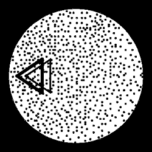

Image 1 shows random dot test. It serves to examine border angle of stereoscopy. Test consists of external black circle and random situated dots inside. Inside dots triangle apears placed in one of four positions, chosen at random each time. Triangle arise by coping all dots in triangle shape and showing them moved to the right for second eye. Size of this movement is directly propotional to examinded angle of stereoscopy. There are 7 predefined angle of stereoscopy values: 0.5', 1', 2', 5', 10', 20', 50' (apostrofe means minutes of angle). Examiner can also choose any value of this angle.
During test patient points at direction where triangle appears using arrows on keyboard:
For accurency improvement it's possible to automatically repeat test. Default amount of repetitions is 4.
